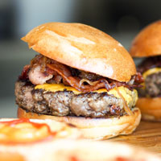

Our chef has been busy putting together the perfect menu for the summer months. Stop by to try these appetizers and main courses while the days are still long.
Appetizers
- Black Bean Purses
- Spicy black bean and a blend of Mexican cheeses wrapped in sheets of phyl-lo and baked until golden. $3.95
- Southwestern Napoleons with Lump Crab — new item!
- Layers of light lump crab meat, bean and corn salsa, and our handmade flour tortillas. $7.95
Main courses
- Shrimp Sate Kebabs with Peanut Sauce
- Skewers of shrimp marinated in lemongrass, garlic, and fish sauce then grilled to perfection. Served with spicy peanut sauce and jasmine rice. $12.95
- Jerk rotisserie chicken with fried plantains — new item!
- Tender chicken slow-roasted on the rotisserie, flavored with spicy and fragrant jerk sauce and served with fried plantains and fresh mango. $12.95
Year Round Favorites

Fresh Baked Bread
We start our day at the crack of dawn to bake our own muffins, bread, and dinner rolls. Loaves not used that day are donated to the
local food shelter.

Our Burgers
People come from all over to enjoy our lovingly made burgers. We grind our own locally-sourced organic beef and turkey so you know
it's fresh and free from fillers and other nonsense. Go for one of our creative topping combos or stick with the classics.

Catch of the Day
Our chef works with local fisherman to pick the freshest the sea has to offer for our daily seafood special. Our Roast Cod Caponata
with Roasted Potatoes is an old favorite with our regulars.

Chicken
Our chef works with local farmers to cull the troublemakers from the brood. All of our chickens had bad attitudes in life but are
delicious when cooked.

Fries
If your answer to "Do you want fries with that?" is alwasy a resounding "YES! YES! QUICKLY! DELIVER UNTO ME THE
FRIED POTATOES!" Then our fries are for you!

Tabouleh
Our Chef is a master of mixing couscous into little bits of other stuff and making tiny little towers. Ideal for kids that like
to play with their food. Comes with a side of miniature Roman soldiers and seige equipment.